РолеБаза для чайников или гайд для Мастеров (часть 2)
Недавно ещё один автор выпустил свой гайд на этот конкурс (я его ещё упомяну). Прочитав её, я понял, какое название лучше всего подходит для моих гайдов ;)
Итак, напомню по какой схеме я рассказываю про стол:
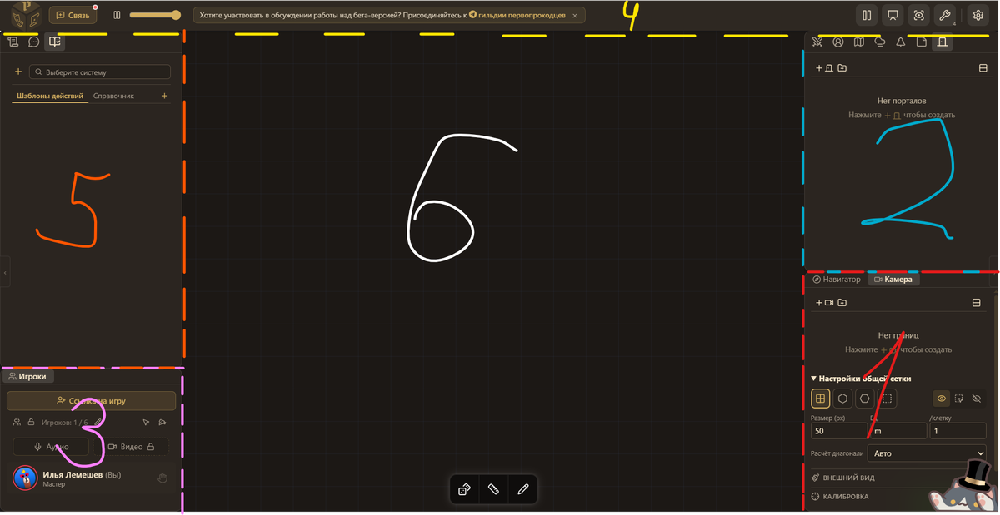
В прошлом гайде я рассказал про 1 и 2 области, продолжим.
3. Коммуникатор
В этой области находится только 1 окно - Игроки.
Большинство функций здесь работают так же как и игрока, об этом можете почитать в моём первом гайде. Но, кроме этого вы можете:
- Задавать лимит игроков. Нажмите на карандаш, чтобы назначить и на замочек, чтобы игроков больше этого числа не пропускало.
- Приглушать камеры игроков. Игроки их и так не видят, а вот вам они могут мешать. Кнопка в виде камеры делает поля зрения серыми и не даёт вам с ними взаимодействовать. Хотя я бы так не делал, всегда лучше знать куда эти приколисты смотрят)
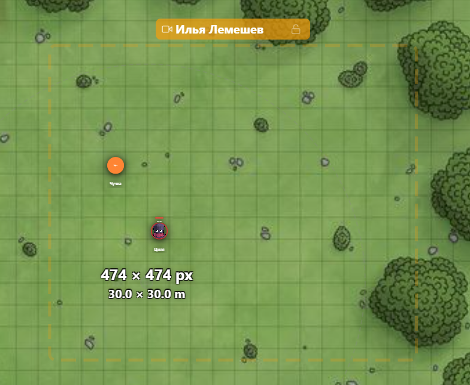
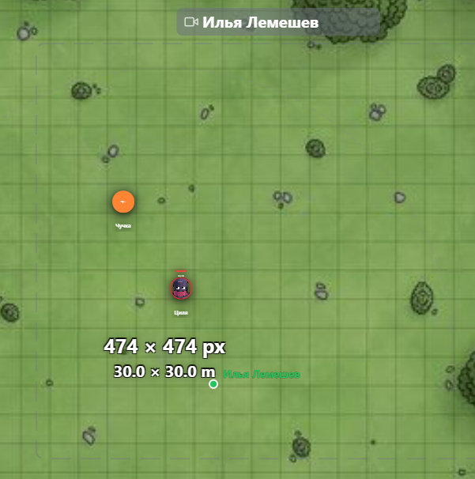
- Взаимодействия с игроками. По сути вы - администратор и модератор, поэтому не удивительно, что вам доступны всякие баны различной степени тяжести. Нажмите на три точки и посмотрите на свою власть.
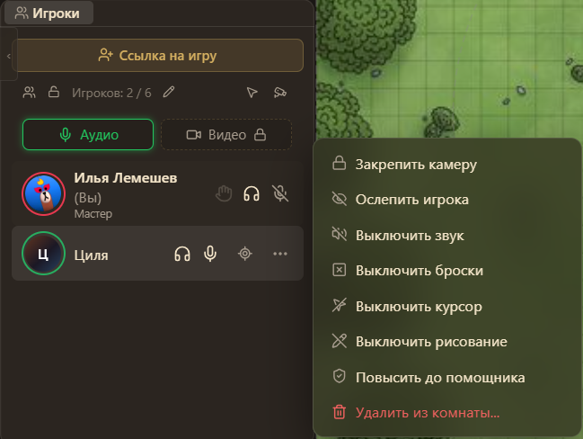
Вы могли заметить кнопку "Повысить до помощника". Насколько я понял, это даёт игроку абсолютно такие же права и интерфейс как и у вас, делая по сути вторым Мастером.
Нажав на наушники, вы можете уменьшить громкость определённого игрока, а нажав на них у себя отключить всех нафиг.
Зажав ЛКМ на кнопке микрофона или нажав по ней ПКМ, вы можете включить режим Трибуны, когда все слышат только этого игрока.
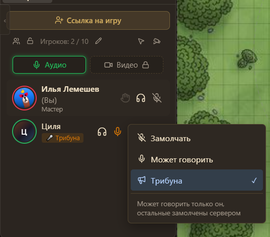
Камера мне не доступна, поэтому пока всё :/
4. Настройки и всякое
Вот так выглядит эта панелька:
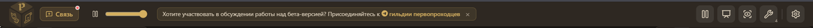
Разберём каждую кнопку (ура?):
Связь.
Даёт напрямую связаться с разработчиками, как я уже говорил в первом гайде, не стесняйтесь им писать, они обязательно вам ответят и помогут!
Ползунок меняющий громкость музыки.
Как не удивительно, это ползунок меняющий громкость всей музыки. Левее кнопка, которая ставит её на паузу. На громкость игроков никак не влияет. Как вообще добавлять музыку поговорим позже.
Рекламка ТГ канала. Подпишитесь!
Пауза.
Ставит игру на паузу. Игроки в это время не могу взаимодействовать ВООБЩЕ ни с чем (даже с кнопками типа микрофона) и видят это:
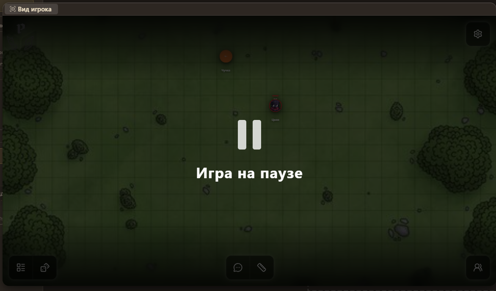
Режим презентации.
Заставляет игроков смотреть на то, на что смотрите вы. У вас открывается такая менюшка:
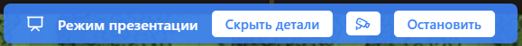
Скрыть детали - очень странная кнопка, которая превращает игру в муть (только игрокам, конечно):
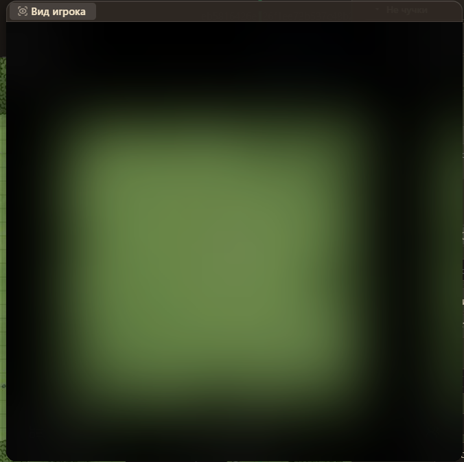
Кстати, игрок всё ещё может в таком состоянии передвигать токены, если нащупает их, конечно.
Кнопка камеры. Закрепляет камеру презентации, она больше не привязана к вам.
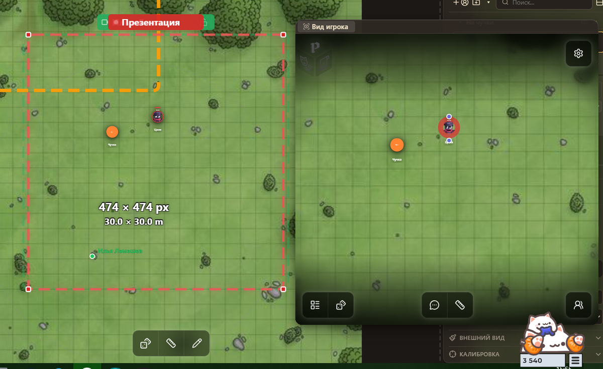
Вид игрока.
Сверхполезная кнопка, создает окно, в котором открыт интерфейс игрока, и добавляет соответственно камеру для этого окна. Очень помогает при подготовке, когда нужно проверить как игроки будут видеть весь твой труд. Именно с этим окном связываются токены, которые принадлежат вам (в пункте владельца вы).
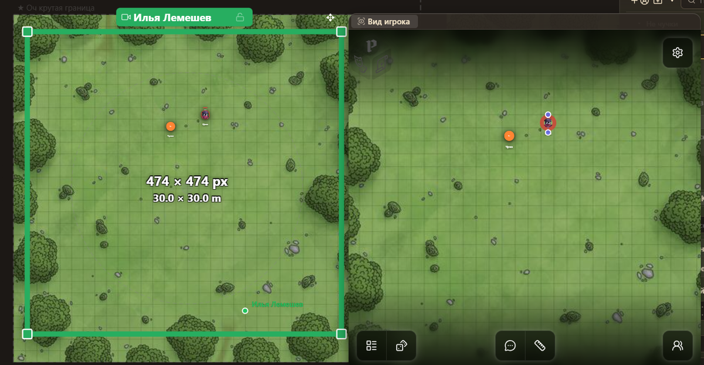
Инструменты.
Число рядом с этой кнопкой показывает, сколько окон у вас скрыто. В базовой раскладке их 4.
Что делает кнопка "Закрепить всё" я хз, я думал она не даёт перетаскивать окна, но это не так, поэтому я в замешательстве...
Бросок костей - открывает окно броска костей, не очень полезно, ведь есть кнопка на главном экране.
Сохранить расклад - позволяет сохранить раскладку окон.
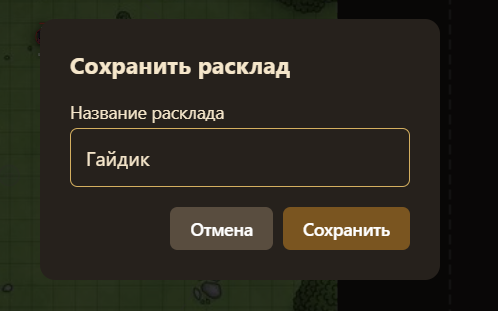
Можно сделать несколько сохранений
Сбросить расклад - сбрасывает раскладку к ролебазовой (не удержался)
Про доп. окна я расскажу в конце.
Настройки.
Кроме сохранения и загрузки комнаты настройки такие же, как и у игроков.
Ещё есть кнопка "Подключить агента", но...
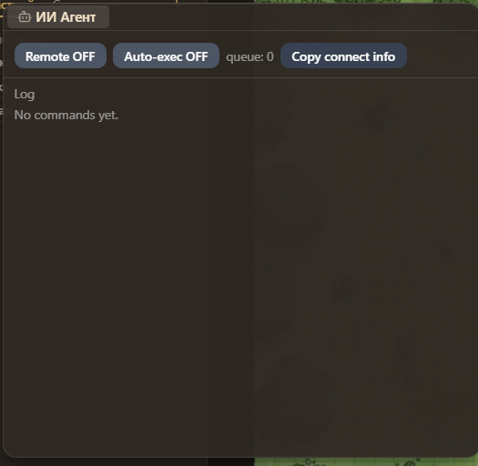
5. Сложнааа Правила, чат и компендиумы
Эта область состоит из 3 окон: Компендиум, Чат и Система правил.
Чат.
Такой же как и у игрока, но вы можете отменять передвижения токенов и другие действия. Я даже фотку вставлять не буду.
Система правил.
Здесь вы выбираете, по каким правилам вы будете играть. Где это нужно я рассказывал в 1 части.
После этого появляются шаблоны действий и возможность создать своё действие (на "+")
Как создавать действия довольно подробно объяснил мой коллега Daria Di в своём гайде, советую к прочтению.
Так же в этом окне есть справочные материалы с формулами, которые не зависят от выбранной системы.
Компендиумы.
Пожалуй самое интересное, но я бы хотел посвятить этому отдельный гайд, поэтому крайне коротко.
На "+" вы можете добавлять на стол компендиумы: свои или публичные.
Потом просто открываете компендиум и достаёте на стол что вам нужно.
6. Стол
Возможно, надо было с этого начать, но я дуб.
Основные взаимодействия
- ЛКМ - использовать выбранную кисть.
- ПКМ (зажать) - перемещение по столу.
- Колёсико мыши - масштабирование.
- V - базовая "кисть" позволяет выбирать элементы на столе, открывать их инфо и т.д.
- Z (зажать и нажать) - увеличивает масштаб, если рисовать прямоугольник масштабирует по нему (легче попробовать, чем пытаться понять)
- H - перемещение на ЛКМ. Ладно.
- delete и backspace - удаляет выбранный(ые) элемент(ы).
- cntrl + Z - классический "шаг назад", но будьте осторожны, работает не везде!
- cntrl + shift + Z - отмена "шага назад".
- ПКМ по пустому месту - меню создания:
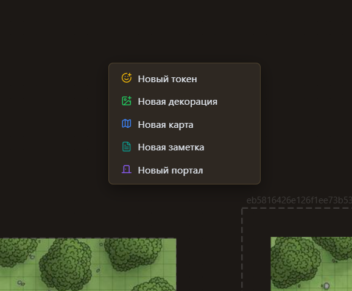
- Если закинете картинку на стол, то РБ спросит:
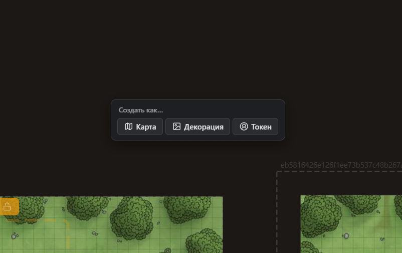
- Камеры игроков вы можете двигать как вздумается, а если игрок продолжает убегать, просто пристолбите его к месту нажав на замочек рядом с именем.
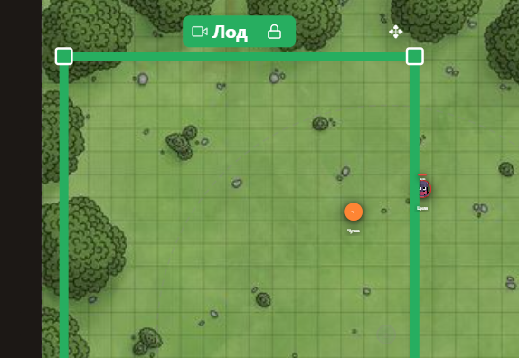
- Нажав на само имя откроется такое же меню как на "3 точки":
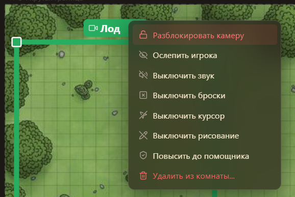
Всё что я вспомнил и нашёл, если знаете ещё клавиши (которые не упомянуты выше и ниже) пишите мне в комменты. (ну или где меня найдёте)
Кнопки
- Кости и Линейка - It just works the same way as a player, lol.
- Рисование - позволяет рисовать всякое на столе:
1. Перо (D):
2. Маркер (Shift + D):
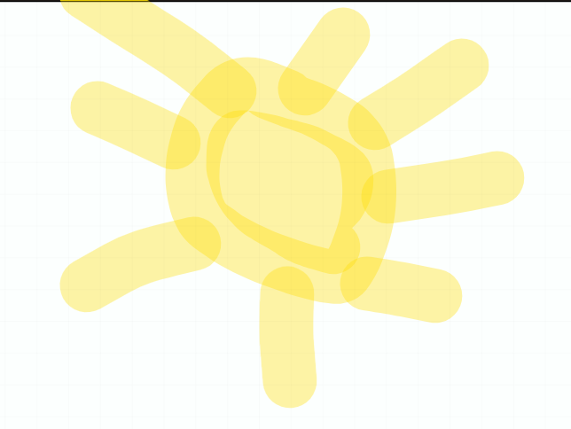
3. Линия (L) - идеально ровные линии, которые можно изменять после нарисования (как-то не правильно звучит):
4. СтРеЛоЧкИ (A) - Коннектится с другими фигурами, т.е. соединяется с линией, идёт вдоль радиуса эллипса и т.д. А ещё почему-то в их настройках есть выбор шрифта.
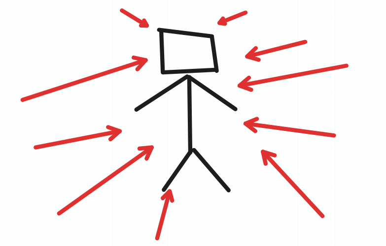
5. Ластик (E):
6. Прямоугольник (R) - на Shift рисует квадраты:
7. Эллипс (O) - на Shift рисует круги.
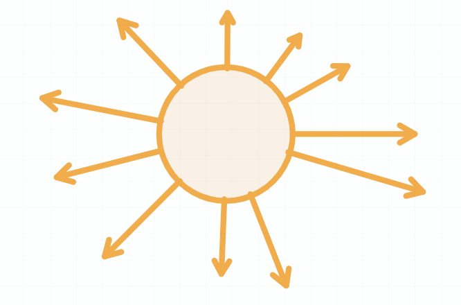
8. Текст (T) - есть 4 шрифта
9. Заметка (N) - прикольная штука. Если её выбрать, то по сторонам появятся голубые точки, нажатие по ним создаст рядом ещё одну заметку.
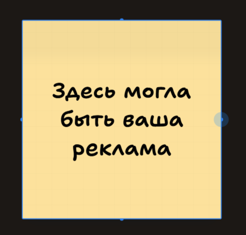
10. Рамка (F) - всегда белый прямоугольник, я не знаю зачем это может быть нужно, но я на нём рисовал.
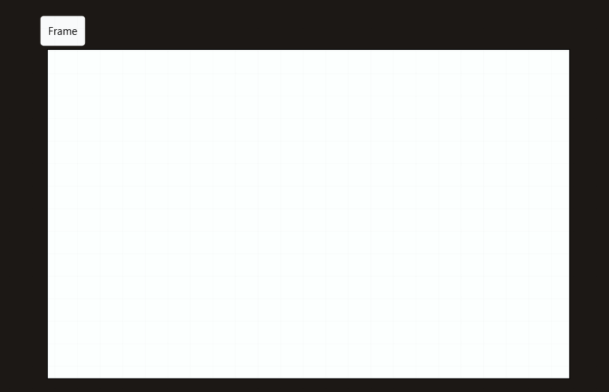
Рамку, эллипс и прямоугольник можно не рисовать, а просто нажать и они создадутся идеальные. У эллипса и прямоугольника можно менять степень закрашивания. Если перейти в режим создания через горячую клавишу, режим выключится после создания первого элемента.
Дополнительные окна
Напомню, что эти окна можно включить через кнопку "Инструменты":
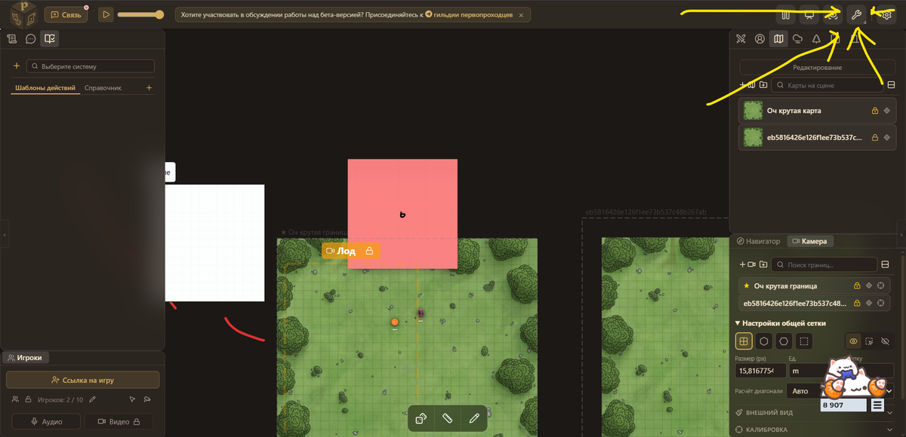
Слои.
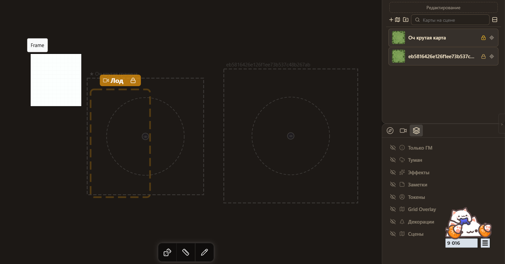
Позволяют отключить видимость некоторых элементов игры. На фото я отключил вообще всё, видимыми остались только Рамка и Границы.
Столы.
Это не то, что вы подумали. Тоже список, кста.
Позволяет создать черновики основного стола. Т.е.:
1. Рисуем каракулю:

2. Создаём новый стол (на значок молнии его можно заранее прогрузить, кста):
3. Там та же каракуля:

4. Удаляем каракулю в новом столе.
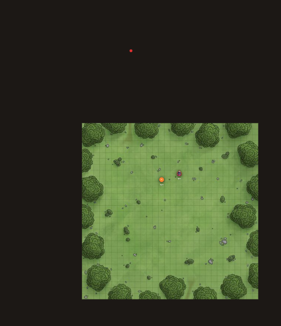
5. Возвращаемся в основной стол, и что мы видем?
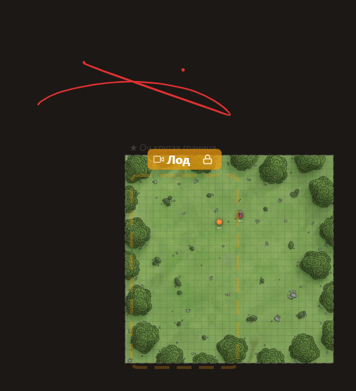
Причём, даже если мы вернёмся в новый стол, то каракуля вернётся!

6. Чтобы удалить каракулю нам нужно удалить её на основном столе, и только тогда она исчезнет и на новом.
Ну, в общем, надеюсь вы поняли (и надеюсь я правильно понял эту функцию)
А, а ещё если стовов больше 1, сверху появляется список:
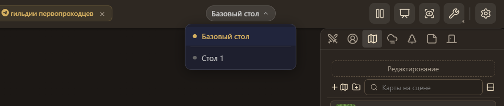
Контейнеры
Пожалуйста, напишите мне, если знаете как это работает. Я понасоздавал токенов и декораций с инвенарями, а это окно всё равно пустое 😭
Музыка
Моё любимое, по хорошему об этом надо рассказать в гайде по компендиумам, но не буду растягивать.
1. Для начала через область 5 добавьте компендиум с музыкой (например, мой Undertale Саундтрек):
2. Далее в Музыке добавьте Канал. На данный момент есть только 1 режим воспроизведения, но скоро появятся новые.
3. Выбирайте музыку :
Можно добавить несколько каналов, если вам нужно чтобы одновременно играла музыка и эмбиент, или просто хотите заготовить несколько песен для быстрого переключения.
На этом пожалуй всё. Более или менее я разобрал все функции в РолеБазе, надеюсь этот стол ждёт отличное будущее и он сможет соперничать с такими игроками (хех), как Roll20 и Foundry.
Если хотите что-то дополнить или поправить - напишите мне.
Спасибо за прочтение!